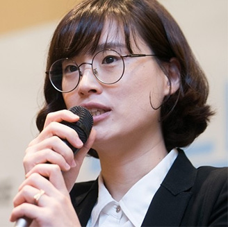

회사소개
To be the greatest in living space
개요
- “국내 시장을 이끄는 선두 기업”
-
1970년 부엌가구 전문 회사로 출발한 한샘은 입식 부엌의 개념조차 낯설었던 우리 가정에 새로운 현대식 부엌을 소개하면서 국내 시장을 이끄는 선두 기업으로 자리 잡았습니다.
싱크대라 통칭되던 부엌가구 시장에 ‘시스템 키친’ ‘인텔리전트 키친’이라는 용어를 처음 도입하면서 비효율적인 부엌을 편리하고 아름다운 공간으로, 주부만이 아닌 가족 모두를 위한 제 2의 거실로 제안하는 등 부엌 문화의 새로운 장을 열었습니다.
- “가고 싶은 곳 머물고 싶은 곳”
-
현대인에게 집은 사랑하는 가족들과 화목한 대화를 나눌 수 있는, 휴식과 재충전의 공간입니다.
이러한 집이란 공간이 세상에서 가장 가고 싶고 머물고 싶은 곳이 될 때, 현대인들은 진정한 휴식과 행복을 얻을 수 있게 됩니다. 한샘과 함께하면 여러분의 집이 이 세상에 하나밖에 없는 '개성 있고 아름다운 나만의 집'으로 변합니다.
한샘은 개성 있고 아름다운 생활 공간을 제공하는 것을 통해 건강하고 화목한 가정을 만드는데 기여하겠습니다.
경영철학
디자인
-
- Global
-
창의적 공간 디자인으로
동북아 시대를 선도합니다.
-
- Environment
-
환경친화적 디자인으로
자원의 낭비를 줄입니다.
-
- Lifestyle
-
디지털 공간 디자인으로
라이프스타일의 변화를 이끕니다.
DBEW 디자인센터
전통과 미래가 만나는 곳
DBEW 디자인센터는 전통과 미래를 연결하는 디자인 개발의 요람입니다.
창덕궁 후원이 내려다보이는 서울의 심장부에 자리한 DBEW 디자인센터는 고궁의 ‘화계’와 궁궐의 건축 양식인 ‘가구법’에서 추상화한 건축양식을시도했습니다.
단순하면서도 절제된 건축 형상은 자연을 다치지 않게 하면서 고궁과 조화할 수 있도록, 자연스럽게 궁 주변 경관에 머무르도록 했습니다.
화계식으로 처리한 건물은 고궁에서 바라볼 때 후원 석축 기단이 이어진 형상이며, 350여 평 부지는 모두 한국식 정원으로 꾸몄습니다.
한국적 전통미를 살린 건물이나 내부는 현대 사회의 문제점과 해결책을 모색하는 창조적인 디자인 개발의 요람이라 할 수 있습니다.
ci
-
- Red
- #d7182a
-
- Yellow
- #fdaf17
-
- Blue
- #00569f
한샘 CI의 전체적인 형상은 영문 HANSSEM을 단순화하여 표현한 것입니다. 영문 표기는 한국의 한샘에서, 세계속의 한샘이 되기 위한 한샘의 의지를 뜻합니다.
한샘 CI를 구성하는 각각의 막대기는 크리에이티브 블록이라고 부릅니다.
크리에이티브 블록의 단순한 형태와 다양한 컬러는 단순성과 다양성을 동시에
함축하는 한국의 문화적 특질을 나타내고 있습니다.
크리에이티브 블록이 점진적으로 전개되는 모습은 ‘시장의 세계화’와
‘사업의 다변화’를 의미함으로써 세계 최강의 기업에 도전하자는 한샘의
의지를 엿볼 수 있습니다.
Mission
Vision
Customer